Website Publik
- Beranda, Tentang, Katalog, Detail Produk, Kontak
- Inquiry form dengan validasi, honeypot, dan rate limit
- Konten dinamis dari CMS
Dokumentasi
Website publik, dashboard admin, API internal, dan SOP operasional dalam satu halaman HTML.
composer setup
php artisan db:seed
php artisan storage:link
composer devPassword semua akun: password
php artisan schedule:work
php artisan queue:workInquiry -> Quotation -> Sales Order -> Invoice -> Payment -> Report
Kelola konfigurasi, akses, data master, audit, dan intervensi lintas modul.
Review KPI, cashflow, piutang, pengeluaran, dan keputusan strategis.
Menjalankan alur inquiry sampai invoice dan update CMS website.
Mencatat pembayaran invoice, validasi nominal, dan monitor outstanding.
Kelola mutasi stok, penerimaan barang, dan cek stok kritis.
| Area Tugas | super_admin | owner | admin | kasir | gudang |
|---|---|---|---|---|---|
| Manajemen user dan role | Utama | Review | - | - | - |
| Inquiry dan quotation | Monitor | Monitor | Utama | Bantuan | - |
| Sales order dan invoice | Monitor | Review KPI | Utama | Utama pembayaran | Koordinasi stok |
| Procurement dan stok | Monitor | Review | Proses | - | Utama |
| Laporan dan compliance | Utama | Utama review | Support | Support | Support |
Berikut gallery screenshot (saat ini placeholder). Ganti file SVG dengan capture asli agar dokumentasi visual final.
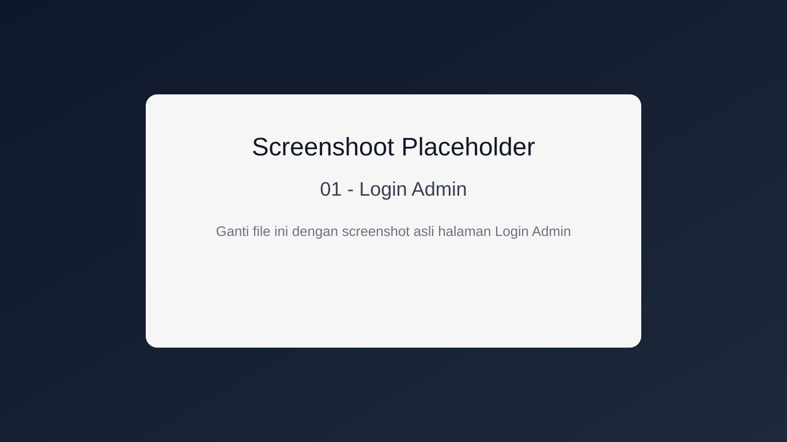
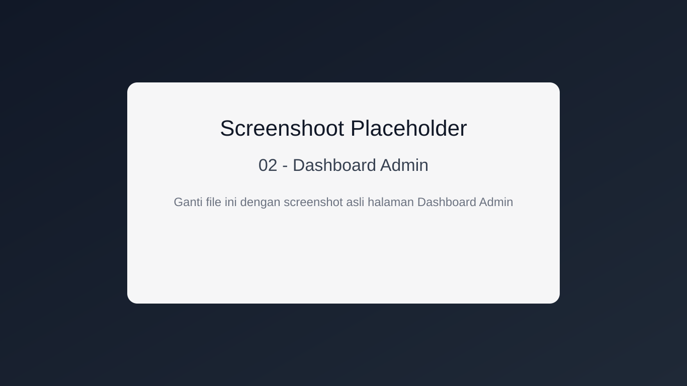
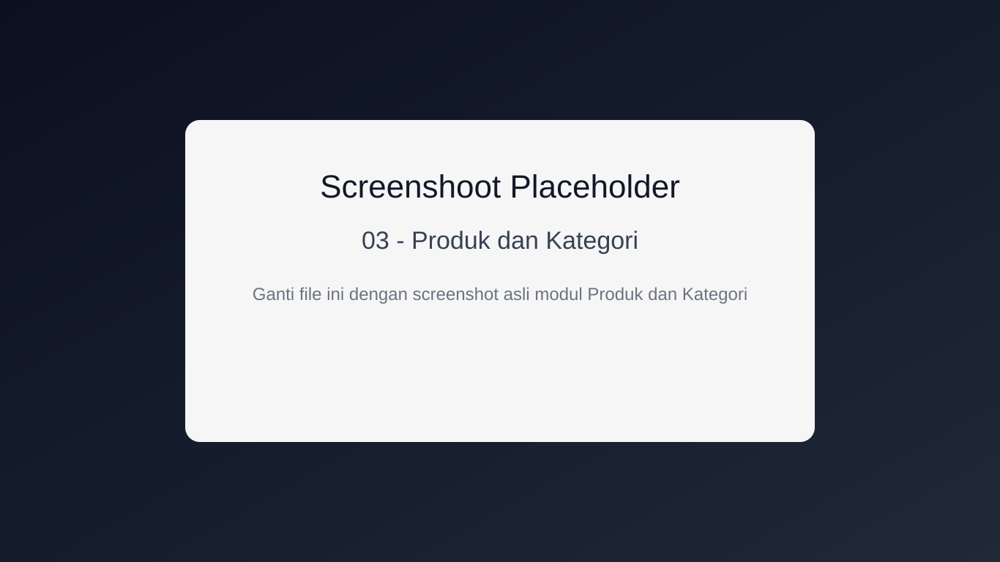
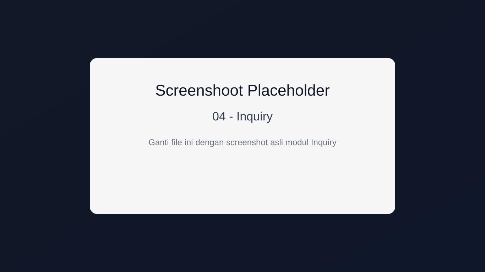
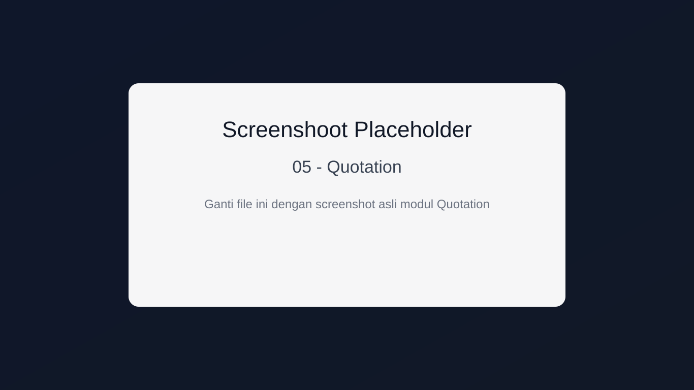
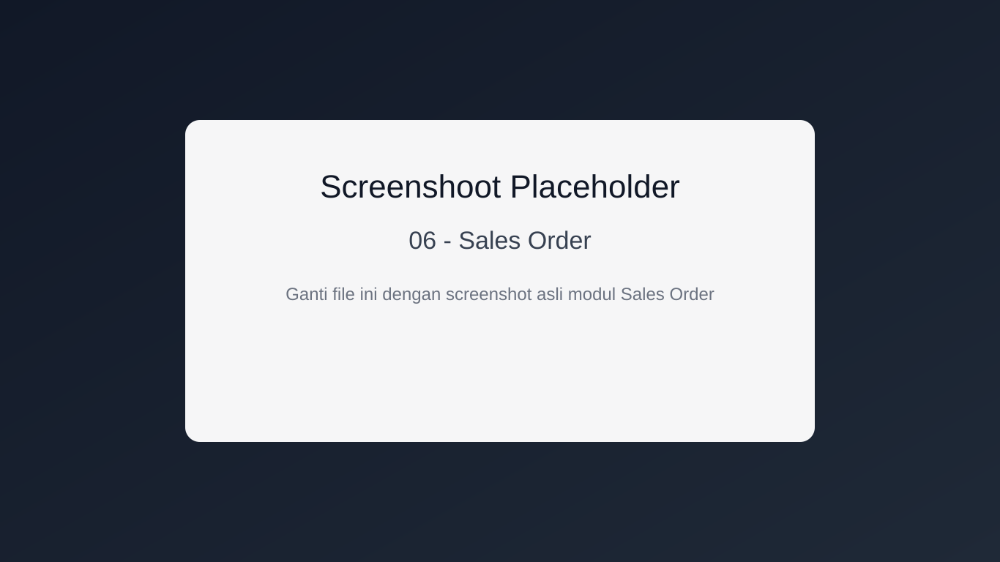
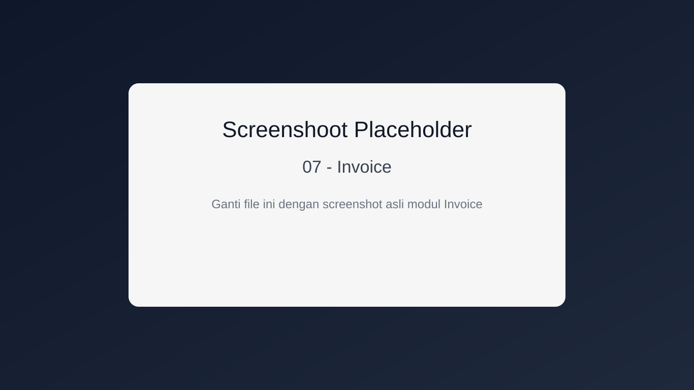
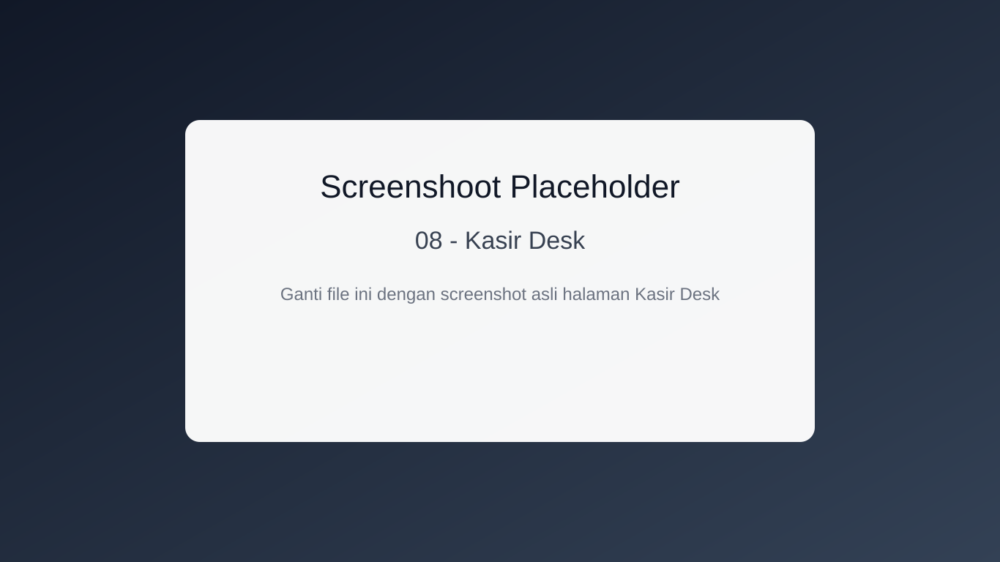
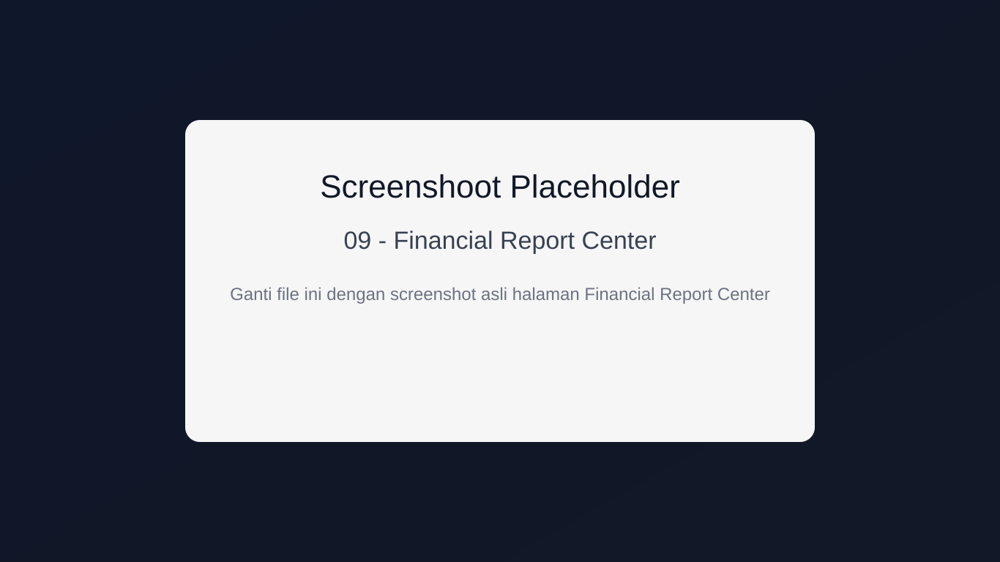
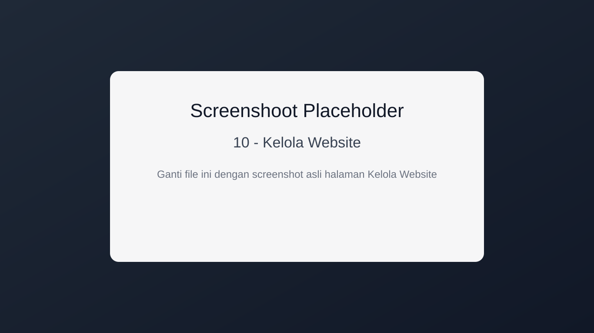
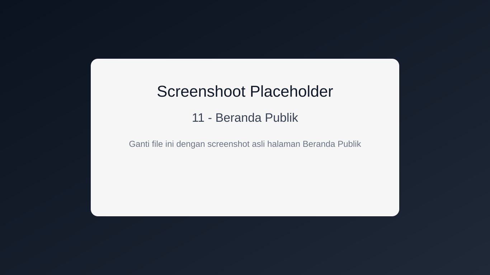
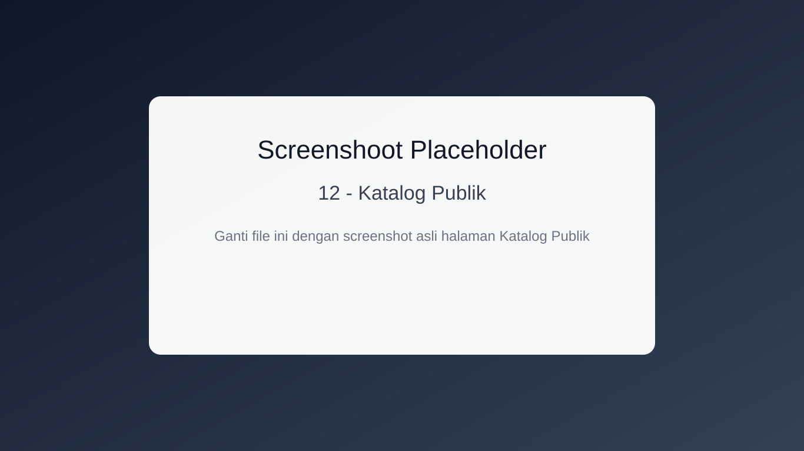
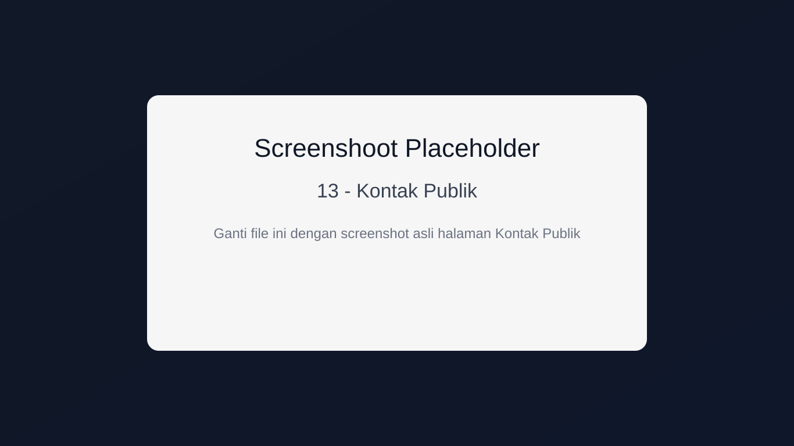